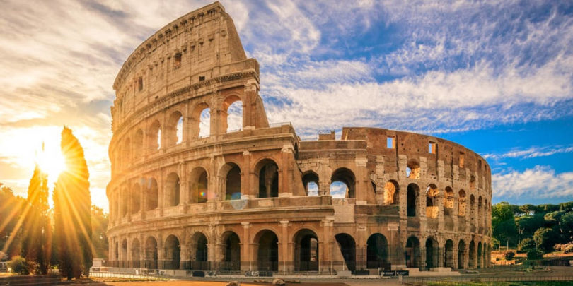
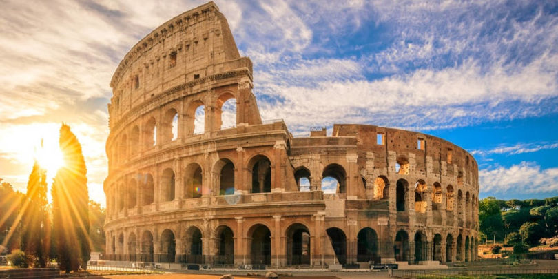

Roman Colosseum
 

Name and Orthography
Originally, the building's Latin name was simply the Latin: amphitheatrum, 'amphitheatre' Though the modern name Flavian Amphitheatre is often used, there is no evidence it was used in Classical Antiquity.This name refers to the patronage of the Flavian dynasty, during whose reigns the building was constructed, but the structure is better known as the Colosseum.In antiquity, Romans may have referred to the Colosseum by the unofficial name Amphitheatrum Caesareum (with Caesareum an adjective pertaining to the title Caesar), but this name may have been strictly poetic as it was not exclusive to the Colosseum; Vespasian and Titus, builders of the Colosseum, also constructed an Flavian Amphitheatre in Puteoli (modern Pozzuoli).
The name colosseum for the amphitheatre is attested from the 6th century, during Late Antiquity. The name Colosseum is believed to be derived from a colossal statue of Nero on the model of the Colossus of Rhodes. The giant bronze sculpture of Nero as a solar deity was moved to its position beside the amphitheatre by the emperor Hadrian (r. 117–138) The word colosseum is a neuter Latin noun formed from the adjective colosseus, meaning "gigantic" or "colossean".[11] By the year 1000 the Latin name "Colosseum" had been coined to refer to the amphitheatre from the nearby "Colossus Solis".
The spelling was sometimes altered in Medieval Latin: coloseum and coliseum are attested from the 12th and 14th centuries respectively. In the 12th century, the structure was recorded as the amphitheatrum colisei, 'Amphitheatre of the Colossus'.In the High Middle Ages, the Flavian amphitheatre is attested as the late 13th-century Old French: colosé, and in Middle French as: colisée by the early 16th century, by which time the word could be applied to any amphitheatre.From Middle French: colisée derived the Middle English: colisee, in use by the middle of the 15th century and employed by John Capgrave in his Solace of Pilgrims, in which he remarked: Middle English: collise eke is a meruelous place þe moost part of it stant at þis day.[16] An English translation by John Bourchier, 2nd Baron Berners of Antonio de Guevara's biography of Marcus Aurelius (r. 161–180) in about 1533 referred to Middle English: this Emperour, beynge with the Senate at Collisee. Similarly, the Italian: colosseo are attested as referring first to the amphitheatre in Rome.
The earliest citation for the name Colosseum in Early Modern English is the 1600 translation, by Philemon Holland, of the Urbis Romae topographia of Bartolomeo Marliani, which he used in the preparation of his translation of Livy's Augustan era Ab Urbe Condita Libri. The text states: "This Amphitheatre was commonly called Colosseum, of Neroes Colossus, which was set up in the porch of Neroes house."Similarly, John Evelyn, translating the Middle French name: le Colisée used by the architectural theorist Roland Fréart de Chambray, wrote "And 'tis indeed a kind of miracle to see that the Colosseum and innumerable other Structures which seemed to have been built for Eternity, should be at present so ruinous and dilapidated"
After Nero's suicide and the civil wars of the Year of the Four Emperors, the Colossus of Nero was remodeled by the condemned emperor's successors into the likeness of Helios (Sol) or Apollo, the sun god, by adding the appropriate solar crown. It was then commonly referred to as the "Colossus solis". Nero's head was also replaced several times with the heads of succeeding emperors. Despite its pagan links, the statue remained standing well into the medieval era and was credited with magical powers. It came to be seen as an iconic symbol of the permanence of Rome. The emperor Constantine the Great remodeled the statue's face as his own.
In the 8th century, an epigram attributed to the Venerable Bede celebrated the symbolic significance of the statue in a prophecy that is variously quoted: Quamdiu stat Colisæus, stat et Roma; quando cadet colisæus, cadet et Roma; quando cadet Roma, cadet et mundus ("as long as the Colossus stands, so shall Rome; when the Colossus falls, Rome shall fall when Rome falls, so falls the world"). This is often mistranslated to refer to the Colosseum rather than the Colossus (as in, for instance, Byron's poem Childe Harold's Pilgrimage). However, at the time that the Pseudo-Bede wrote, the masculine noun coliseus was applied to the statue rather than to the amphitheatre.
The Colossus did eventually fall, possibly being pulled down to reuse its bronze.
Prologue
The Colosseum, also named the Flavian Amphitheater, is a large amphitheater in Rome. It was built during the reign of the Flavian emperors as a gift to the Roman people.
When the Colosseum first opened, the emperor Titus celebrated with a hundred days of gladiatorial games. Emperors traditionally attended the games. The emperor Commodus is known to have performed in the arena on hundreds of occasions. Aside from the games, the Colosseum also hosted dramas, reenactments, and even public executions.
Eventually, the Romans’ interest in the games waned. After the fall of the Western Roman Empire, the Colosseum began to deteriorate. A series of earthquakes during the fifth century A.D. damaged the structure, and it also suffered from neglect. By the 20th century, nearly two-thirds of the original building had been destroyed. Nevertheless, a restoration project began in the 1990s to repair the Colosseum. Today it is one of modern-day Rome’s most popular tourist attractions, hosting millions of visitors a year.
.
History of Roman Colosseum
The name colosseum for the amphitheatre is attested from the 6th century, during Late Antiquity. The name Colosseum is believed to be derived from a colossal statue of Nero on the model of the Colossus of Rhodes. The giant bronze sculpture of Nero as a solar deity was moved to its position beside the amphitheatre by the emperor Hadrian 117–138).The word colosseum is a neuter Latin noun formed from the adjective colosseus, meaning "gigantic" or "colossean".By the year 1000 the Latin name "Colosseum" had been coined to refer to the amphitheatre from the nearby "Colossus Solis".
The spelling was sometimes altered in Medieval Latin: coloseum and coliseum are attested from the 12th and 14th centuries respectively. In the 12th century, the structure was recorded as the amphitheatrum colisei, 'Amphitheatre of the Colossus'. In the High Middle Ages, the Flavian amphitheatre is attested as the late 13th-century Old French: colosé, and in Middle French as: colisée by the early 16th century, by which time the word could be applied to any amphitheatre. From Middle French: colisée derived the Middle English: colisee, in use by the middle of the 15th century and employed by John Capgrave in his Solace of Pilgrims, in which he remarked: Middle English: collise eke is a meruelous place þe moost part of it stant at þis day. An English translation by John Bourchier, 2nd Baron Berners of Antonio de Guevara's biography of Marcus Aurelius (r. 161–180) in about 1533 referred to Middle English: this Emperour, beynge with the Senate at Collisee. Similarly, the Italian: colosseo, or coliseo, are attested as referring first to the amphitheatre in Rome, and then to any amphitheatre. By 1460, an equivalent existed in Catalan: coliseu; by 1495 had appeared the Spanish.
The earliest citation for the name Colosseum in Early Modern English is the 1600 translation, by Philemon Holland, of the Urbis Romae topographia of Bartolomeo Marliani, which he used in the preparation of his translation of Livy's Augustan era Ab Urbe Condita Libri. The text states: "This Amphitheatre was commonly called Colosseum, of Neroes Colossus, which was set up in the porch of Neroes house.Similarly, John Evelyn, translating the Middle French name: le Colisée used by the architectural theorist Roland Fréart de Chambray, wrote 'tis indeed a kind of miracle to see that the Colosseum and innumerable other Structures which seemed to have been built for Eternity, should be at present so ruinous and dilapidated"
After Nero's suicide and the civil wars of the Year of the Four Emperors, the Colossus of Nero was remodeled by the condemned emperor's successors into the likeness of Helios or Apollo, the sun god, by adding the appropriate solar crown. It was then commonly referred to as the "Colossus solis". Nero's head was also replaced several times with the heads of succeeding emperors. Despite its pagan links, the statue remained standing well into the medieval era and was credited with magical powers.
In the 8th century, an epigram attributed to the Venerable Bede celebrated the symbolic significance of the statue.This is often mistranslated to refer to the Colosseum rather than the Colossus. However, at the time that the Pseudo-Bede wrote, the masculine noun coliseus was applied to the statue rather than to the amphitheatre.
The Colossus did eventually fall, possibly being pulled down to reuse its bronze. The statue itself was largely forgotten and only its base survives, between the Colosseum and the nearby Temple of Venus and Roma.
Location
Colosseum, also called Flavian Amphitheatre, giant amphitheatre built in Rome under the Flavian emperors. Construction of the Colosseum was begun sometime between 70 and 72 CE during the reign of Vespasian. It is located just east of the Palatine Hill, on the grounds of what was Nero’s Golden House. The artificial lake that was the centrepiece of that palace complex was drained, and the Colosseum was sited there, a decision that was as much symbolic as it was practical. Vespasian, whose path to the throne had relatively humble beginnings, chose to replace the tyrannical emperor’s private lake with a public amphitheatre that could host tens of thousands of Romans.
The structure was officially dedicated in 80 CE by Titus in a ceremony that included 100 days of games. Later, in 82 CE, Domitian completed the work by adding the uppermost story. Unlike earlier amphitheatres, which were nearly all dug into convenient hillsides for extra support, the Colosseum is a freestanding structure of stone and concrete, using a complex system of barrel vaults and groin vaults and measuring 620 by 513 feet (189 by 156 metres) overall. Three of the arena’s stories are encircled by arcades framed on the exterior by engaged columns in the Doric, Ionic, and Corinthian orders; the structure’s rising arrangement of columns became the basis of the Renaissance codification known as the assemblage of orders. The main structural framework and facade are travertine, the secondary walls are volcanic tufa, and the inner bowl and the arcade vaults are concrete.
Facts about Roman Colosseum
1.Built between 72 AD and 80 AD, the Colosseum consists of stone and concrete. It was constructed by tens of thousands of Jewish slaves under the rule of the Emperor Vespasian.
2. Measuring 189 metres long, 156 metres wide and 50 metres in height, the Colosseum is the largest amphitheater in the world.
3. The Colosseum could seat around 50,000 spectators for a variety of events. These included gladiator contests, animal hunts and re-enactments of famous battles. There were even mock sea battles as they flooded the Colosseum with water.
The arena had 36 trap doors for special effects, as well as many underground passages and rooms to hold wild animals and gladiators before the games began.
5. In order to gain popularity, emperors organised and paid for events in the Colosseum themselves. Entry was free for all ancient Romans and they sometimes had free food throughout the spectacles too.
6. The Colosseum had a velarium, a type of awning used in Roman times. This pulled over the top of the seating area to shade the spectators and protect them from the scorching sun.
7. The animals bought to fight in the arena came from all over the Roman Empire. They included big cats such as lions and tigers, as well as rhinos, crocodiles and bears.
8. Some of the games in the Colosseum lasted up to 100 days. However, gladiator contests stopped in 435 AD and the last animal hunts were in 532 CE. This was partly due to the cost of acquiring animals and gladiators, alongside maintaining the arena.
9. It’s estimated that over 400,000 people and over a million wild animals died during the centuries that the games took place.
10. Natural disasters and vandalism destroyed approximately two-thirds of the Colosseum. But it was the 847 AD and 1231 AD earthquakes that did the most damage that you can see today.
More about Colosseum
During the 16th and 17th century, Church officials looked for a use for the big and ruined building. Pope Sixtus V (1521–1590) wanted to turn the building into a wool factory to provide jobs for Rome's prostitutes, but he died and the idea given up.
The Colosseum in a 1757, Giovanni Battista Piranesi
In 1749, Pope Benedict XIV said that the Colosseum was a sacred place where early Christians had been martyred. He stopped people from taking any more building stones away. He set up the Stations of the Cross inside the building. He said the place was made sacred with the blood of the Christian martyrs who had died there. However, there is no historical evidence that any Christians had been killed in the Colosseum.
Later popes started projects to save the building from falling down. They took out the many plants which had overgrown the building and were causing more damage. The facade was made stronger with triangular brick wedges in 1807 and 1827. The inside was repaired in 1831, 1846 and in the 1930s. The underground area was partly dug out in 1810–1814 and 1874.